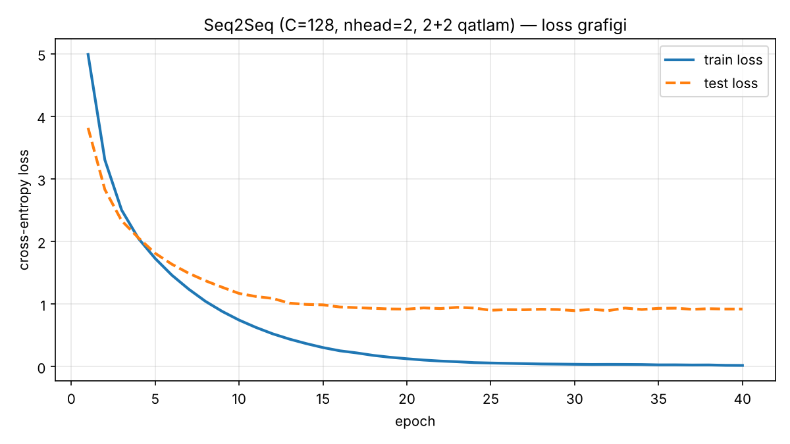
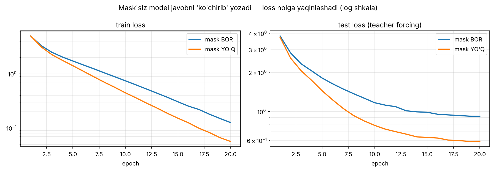

One-time download (~900 MB, cached afterwards). After that it translates offline and nothing leaves your device.
Privacy: Online mode sends your text to MyMemory, a third-party translation service. Word look-ups do too, unless On-device AI is loaded. On-device AI and My model run entirely in your browser. Voice input uses your browser's speech service. Saved words and history stay on this device.
Try an example
German phrase of the day
My words
Saved words and sentences. Review them with spaced repetition (Leitner boxes).
No words yet. Translate something and tap a word (or the ★ button) to save it.
History
Your last 100 translations, stored only on this device.
Nothing here yet.
How Translator works
Built by PearlyMe, starting from a university assignment: “Seq2Seq (Transformer) bilan Ingliz → O'zbek mini translator”. It grew into a translator I use every day to learn German.
Online
Fast translations through the free MyMemory API. Best for quick lookups when you're connected.
On-device AI
Meta's NLLB-200 (600M parameters, 8-bit) running in your browser with Transformers.js + WebAssembly. Private, and it works offline after the first download.
My model
My homework model: an encoder–decoder Transformer trained from scratch in PyTorch on ~1,900 EN→UZ sentence pairs, exported to ONNX (int8, 1.7 MB) and run with ONNX Runtime Web. Small vocabulary, so it's best on simple everyday sentences.
Encoder → Decoder


German learning tools
- der / die / das nouns are color-coded in German output (die is also the plural article).
- Tap any word for an instant lookup in the other languages, pronunciation and one-tap saving.
- Spaced-repetition flashcards, plus Anki/CSV export.
- Voice input and text-to-speech (depends on the voices your device has).
- Installable as an app (PWA). History and words stay on your device.
Data: own rule-based EN→UZ corpus · Models: PyTorch → ONNX · NLLB-200 © Meta (CC-BY-NC 4.0) · Online engine: MyMemory